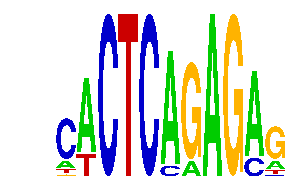

family_19 |
|---|
|  |
| Download PWM |
| Download instances (motifs) |
| Show motif distribution |
Query_ID | Query_Consensus | Subject_Name | Source_DB | Subject_ID | Length | Orientation | Offset | Divergence | Overlap | Subject_Consensus |
|---|
Sequence | Start_position (from start) | Start_position (from end) | Average conservation | Best conservation score | Instance_with_best_CS | Best_Z-score | Instance_with_best_ZS | Strand |
|---|---|---|---|---|---|---|---|---|
| chr11:90113286-90114286 | 90 | 101 | 0.00327273 | 0.006 | .WCTCMGAGAG | 12.697031 | .WCTCMGAGAG | -1 |
| chr9:67039403-67040403 | 619 | 630 | 0 | 0 | .WCTCMGAGAG | 12.697031 | .WCTCMGAGAG | -1 |
| chr14:63850973-63851973 | 882 | 893 | 0.000818182 | 0.003 | CACTCARAGM. | 12.697031 | CACTCARAGM. | 1 |
| chr19:36808523-36809523 | 525 | 536 | 0.000363636 | 0.003 | .WCTCMGAGAG | 12.697031 | CACTCARAGM. | 1 |
| chr12:104593596-104594596 | 374 | 385 | 0.991273 | 1 | .WCTCMGAGAG | 12.697031 | .WCTCMGAGAG | -1 |
| chr19:6384514-6385514 | 105 | 116 | 0.972 | 1 | .WCTCMGAGAG | 12.697031 | .WCTCMGAGAG | 1 |
| chr8:42100256-42101256 | 269 | 280 | 0.996545 | 1 | CACTCARAGM. | 12.697031 | CACTCARAGM. | 1 |
| chr19:6384514-6385514 | 838 | 849 | 0.0134545 | 0.041 | CACTCARAGM. | 12.697031 | CACTCARAGM. | 1 |
| chr10:45058222-45059222 | 581 | 592 | 0.00218182 | 0.005 | .WCTCMGAGAG | 12.697031 | .WCTCMGAGAG | -1 |
| chr2:17378003-17379003 | 529 | 540 | 0.00190909 | 0.006 | .WCTCMGAGAG | 12.697031 | .WCTCMGAGAG | -1 |
| chr1:45370607-45371607 | 119 | 130 | 0.000545455 | 0.005 | CACTCARAGM. | 12.697031 | CACTCARAGM. | 1 |
| chr3:101399640-101400640 | 716 | 727 | 0.976 | 0.998 | .WCTCMGAGAG | 12.697031 | .WCTCMGAGAG | -1 |
| chr2:167931910-167932910 | 566 | 577 | 0.00572727 | 0.01 | CACTCARAGM. | 12.697031 | CACTCARAGM. | 1 |
| chr17:26977743-26978743 | 943 | 954 | 0.00163636 | 0.007 | CACTCARAGM. | 12.697031 | CACTCARAGM. | 1 |
| chr2:17378003-17379003 | 548 | 559 | 0.0358182 | 0.095 | CACTCARAGM. | 12.697031 | CACTCARAGM. | 1 |
| chr11:11786694-11787694 | 88 | 99 | 0.0411818 | 0.051 | CACTCARAGM. | 12.697031 | CACTCARAGM. | 1 |
| chr17:69530370-69531370 | 670 | 681 | 0.000636364 | 0.003 | .WCTCMGAGAG | 12.697031 | .WCTCMGAGAG | -1 |
| chr9:120778468-120779468 | 341 | 352 | 0.612091 | 0.997 | CACTCARAGM. | 12.697031 | .WCTCMGAGAG | -1 |
| chr1:74008798-74009798 | 204 | 215 | 0.158909 | 0.495 | .WCTCMGAGAG | 12.697031 | CACTCARAGM. | 1 |
| chr1:166391413-166392413 | 981 | 992 | 0.000272727 | 0.001 | .WCTCMGAGAG | 12.697031 | .WCTCMGAGAG | -1 |